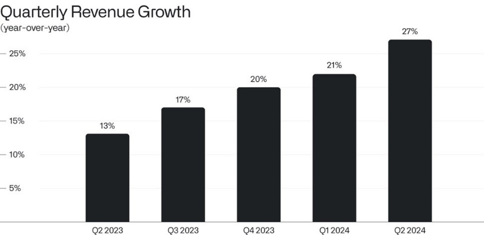
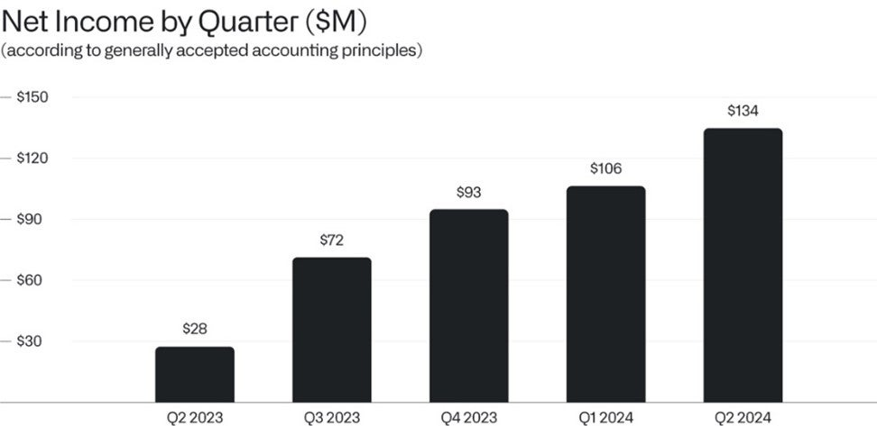
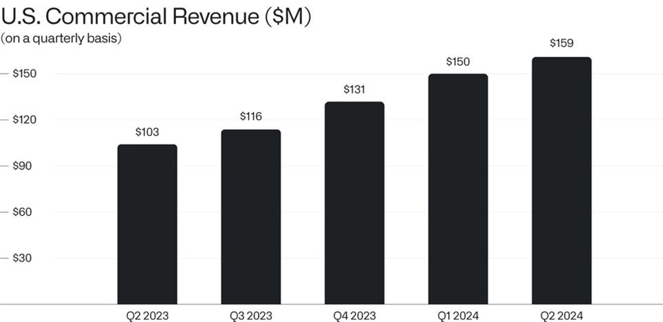
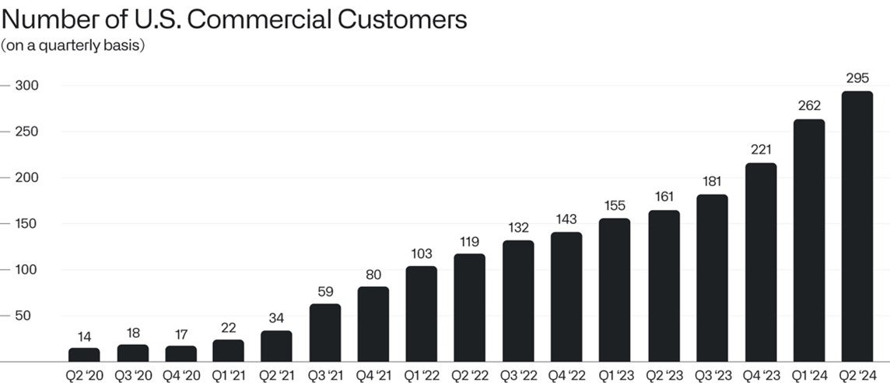

致股东的信
2024年8月5日

I.
过去的剧本已不再奏效。即使是那些曾经相信这些剧本的人，如今也明白这一点。
多年来，企业软件行业充斥着大量公司，它们的主要创新在于销售一种产品，而这种产品充其量只能在另一个存储系统中对数据进行重新整合和来回搬运。
开发软件产品的重心被放在了如何让产品自我推销上，对价值的感知变得比价值本身更重要。人工智能能力的兴起和日益成熟，暴露了企业软件部署中功能失调的程度。那是一个技术浅薄、对实际成果漠不关心的时代。
然而，这些公司如今正被扫到一边。它们试图以牺牲任何真正致力于成果的承诺为代价，抢占文化和道德制高点。而社会——更不用说客户——早已对它们的表演失去兴趣。
与此同时，世界各国的政府曾梦想着经济一体化的承诺足以诱使对手回到谈判桌前——以为可信的军事能力是一种可以安全抛弃的过时之物。它们也错了。它们的误判已带来重大而持久的后果。
我们从一开始就坚信，专注于为合作伙伴创造价值是长期生存和成功的唯一途径，并且美国军队的实力和优势必须得到维护和捍卫。这些本应平常无奇的信念，如今在某些精英舆论圈中却成了激进和冒险的观点。
然而，我们的业务正因为这些观点而以非凡的速度增长，而非尽管有这些观点。
承认我们生活在一个充满意识形态和经济约束的世界中，如今已变得不合时宜。但我们将继续为现实的世界构建软件，而不是为我们希望的世界。
二、
我们在今年第二季度实现了6.78亿美元的收入，同比增长27%。我们的业务增长一直在稳步重新加速，我们看到前方有前所未有的机会来把握并延续这一势头。
而我们的财务业绩，尽管如此强劲，历来只是我们业务品格和势头的滞后指标。

我们的业务也从未像现在这样盈利。
我们在2024年第二季度实现了1.34亿美元的净收入——这是公司二十年来最大的季度利润。我们利润的稳步攀升，反映了市场对我们软件能力毫无保留的需求和理解。

我们在商业和政府市场的增长，源于客户对超越表演性和学术性的人工智能系统源源不断的需求浪潮。
那些令全世界为之着迷的大语言模型，只有在一个对世界——即其独特的对象、逻辑和运行规律——持有明确认知的企业软件系统的背景下释放其力量，才能真正改变跨国企业或国防机构的运作。
拥有数万亿参数的模型或许能够完美地模仿歌德，但仅此而已，对企业几乎没有什么增值。它们来到这个世界时，对其轮廓和逻辑一无所知，更没有真理或基本事实的概念，遑论对一个拥有五十万员工的组织的运营所具备的集体知识和洞察。
那些吸引了我们集体关注的大语言模型具备逼近真理的能力。它们是极其强大的概率引擎，但本身几乎没有方向感，难以独立解决复杂的分析问题。此类模型是必要的，但并不足够。还需要更多的东西。
它们是野兽，其力量和能力必须被驯服和驾驭。而我们现在正在看到，一旦它们被驯服和驾驭，将会产生怎样的可能。
三、
我们的旗舰人工智能平台（AIP）于一年多前推出。它已经改变了我们的业务。
在2024年第二季度，仅美国商业市场我们就创造了1.59亿美元的收入，同比增长55%。若剔除战略性商业合同，增长率更为显著，达到70%的同比增长。而对我们软件的持续旺盛需求——对一个能让人工智能能力为大型机构所用的有效企业平台的需求——丝毫没有减弱的迹象。

我们从一开始就致力于打造能够为合作伙伴提供相对于对手和竞争对手结构性优势的软件产品。我们从未对微小的改进或解决轻微的低效问题感兴趣。正确的软件如果运用得当，能够并且应该改变一个机构。正是这种雄心不仅赢得了现有合作伙伴的认可，也赢得了全新一批客户的青睐。
人们可能很容易忘记，仅仅四年前，我们在美国只有14家商业客户。现在我们已有近三百家。我们在美国商业市场的客户数量同比增长83%，从2023年第二季度的161家增长到2024年第二季度的295家，如今已占我们所有客户的一半。

我们在美国业务的崛起尤其反映了美国文化的活力，以及这个国家的公司和机构在面对新情况时适应和调整的意愿。
美国政府也开始意识到前方机遇的规模。本季度，我们公司历史上首次，美国政府业务（包括国防和情报机构）的过去十二个月收入突破了10亿美元。
随着大语言模型及其能力的到来，世界上每一个寻求生存的机构所处的环境都已发生改变。而我们在美国的合作伙伴是迄今为止调整最快的。
大语言模型的引入和部署将成为未来衡量国家卓越表现最具说服力的代理指标之一。
世界其他国家是否能以类似的方式适应，将是对其活力与能力的检验。
此致，

Alexander C. Karp
首席执行官兼联合创始人
Palantir Technologies Inc.
前瞻性声明
本函包含1995年《私人证券诉讼改革法》“安全港”条款所界定的“前瞻性陈述”，包括但不限于有关我们的财务展望、产品开发及相关时间安排、分销和定价、我们软件平台的预期效益和应用、业务战略和计划（包括与我们的Artificial Intelligence Platform（“AIP”）相关的战略和计划、销售和营销工作、销售团队、合作伙伴关系和客户）、对我们业务的投资、市场趋势和市场规模、机遇（包括增长机遇）、我们对现有及潜在投资以及与各实体商业合同的预期、我们对宏观经济事件的预期、我们对市场指数潜在资格或纳入的预期、我们对股票回购计划的预期以及定位的陈述。这些前瞻性陈述是在首次发布之日作出的，基于当时的预期、估计、预测和推算以及管理层的信念和假设。诸如“指导”、“预期”、“预计”、“应当”、“相信”、“希望”、“目标”、“规划”、“计划”、“目标”、“估计”、“潜在”、“预测”、“可能”、“将”、“或许”、“可以”、“打算”、“将”等词语以及这些词语的变体或否定形式和类似表述，旨在识别这些前瞻性陈述。前瞻性陈述受诸多风险和不确定性的影响，其中许多涉及超出我们控制范围的因素或情况。由于多种因素，我们的实际结果可能与前瞻性陈述中明示或暗示的结果存在重大差异，这些因素包括但不限于我们向美国证券交易委员会（“SEC”）提交的文件中详述的风险，包括我们截至2023年12月31日的财季和财年的10-K表格年度报告，以及我们可能不时向SEC提交的其他文件和报告，包括提供我们截至2024年6月30日财季收益新闻稿的8-K表格当前报告，以及我们截至2024年6月30日财季的10-Q表格季度报告。特别是，以下因素（除其他因素外）可能导致我们的结果与此类前瞻性陈述明示或暗示的结果存在重大差异：我们成功执行业务和增长战略的能力；我们的现金及现金等价物满足流动性需求的能力；市场对我们平台、产品和服务总体上的需求；我们增加新客户数量及从客户获得收入的能力；我们能否将客户合同的全部或部分合同价值确认为收入，包括客户可选择的合同条款或受便利终止条款约束的合同期限；我们漫长且不可预测的销售周期；我们与第三方成功执行渠道销售和其他战略举措的能力；我们保留和扩大客户群的能力；我们的经营业绩和关键业务指标在未来期间按季度波动的可能性；我们业务的季节性；我们平台的实施过程可能复杂且耗时；我们成功开发和部署新技术以满足现有或潜在客户需求的能力；我们使平台和产品更易于安装、使用和消费的能力；我们维护和提升品牌及声誉的能力；随着业务增长以及追求业务和财务目标，我们维护和提升企业文化的能力；有关我们的新闻或社交媒体报道，包括但不限于呈现或依赖不准确、误导性、不完整或具有其他损害性信息的报道；近期或未来的全球宏观经济和地缘政治事件（例如持续的俄乌冲突和以色列冲突、美国及其他国家利率上升、货币政策变化和外汇波动）对我们公司或现有或潜在客户和合作伙伴的业务和运营的影响；在我们的平台中使用人工智能所引发的问题；以及对我们或客户或第三方数据的任何泄露或访问。
本信函中包含的前瞻性陈述仅代表我们在本信函发布之日的观点。我们预计后续事件和发展将导致我们的观点发生变化。我们不承担更新或修订任何前瞻性陈述的意图或义务，无论是基于新信息、未来事件还是其他原因。不应将本信函发布之日之后的任何日期的前瞻性陈述视为代表我们的观点。过往业绩并不必然预示未来结果。
其他说明
本函件可能包含基于独立行业出版物或其他公开信息以及基于我们内部来源的其他信息的统计数据、估算、预测和陈述。这些信息涉及许多假设和局限性，请您注意不要过分依赖这些估算。我们并未独立核实这些行业出版物和其他公开信息中所含数据的准确性或完整性。因此，我们不对该等数据的准确性或完整性作出任何陈述，也不承诺在本函件日期之后更新该等数据。
本信函在讨论我们的业务时可能提及各种增长率。除非另有说明，这些增长率反映的是同比比较。
收到本信函即表示您确认，您将自行负责对市场及我们的市场地位进行评估，并将自行开展分析，且全权负责就所提供的信息（包括关于我们业务潜在未来表现的信息）形成自己的观点。